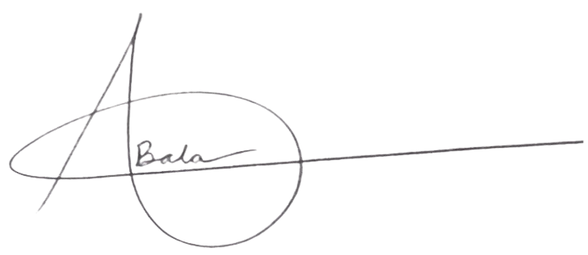

Welcome to TechMUN XXXII
April 11-12, 2025 | Thomas Jefferson High School for Science and Technology
Dearest Delegates and Faculty Advisors,
It is an honor and privilege to welcome you all to TechMUN XXXII, taking place from Friday, April 11 to Saturday, April 12 at Thomas Jefferson High School for S&T.
My name is Adithiya Balaguru, and I am honored to serve as your Secretary-General for this year's conference. My journey in Model United Nations began in high school, and what started as an exciting challenge quickly became a defining part of my academic and personal growth. From participating in numerous conferences to taking on leadership roles within MUN, I have witnessed firsthand how this activity fosters diplomacy, critical thinking, and global awareness. TechMUN has been a cornerstone of my MUN experience, and I am thrilled to contribute to its legacy as a space where delegates come together to debate, collaborate, and lead.
Our world is facing increasingly complex challenges, and TechMUN's mission is to equip delegates with the skills necessary to navigate them, whether through public speaking, negotiation, or problem-solving. Each delegate's preparation and engagement in committee sessions will push them to think critically, collaborate effectively, and develop creative solutions to some of the most pressing global issues.
TechMUN continues to grow as a premier conference, bringing together dedicated students from across the region. With a diverse range of committees, a commitment to substantive excellence, and a Secretariat eager to provide a meaningful and rewarding experience, we look forward to making TechMUN 2025 our best conference yet.
If you have any questions or need assistance during your preparations, please feel free to reach out to tjmodelun@gmail.com. On behalf of the entire Secretariat, I cannot wait to welcome you all to TechMUN 2025 in April.
With gratitude,
Adithiya Balaguru
Secretary-General
TechMUN XXXII